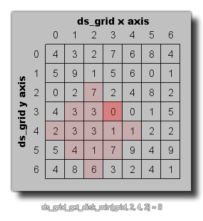

ds_grid_get_disk_min(index, xm, ym, r);
| 参数 | 描述 |
|---|---|
| index | 栅格的索引 |
| xm | 栅格上圆盘的x位置 |
| ym | 栅格上圆盘的y位置 |
| r | 栅格上圆盘的半径 |
返回值: 实数①
①：此处原文为“Real or string”但根据标题所描述，此函数不应当返回字符串。
这个函数可以被用于查找在一个栅格结构中一个圆盘区域以内的所有单元格中的最大值，正如下图所示：

val = ds_grid_get_disk_min(grid, 5, 5, 2);
上述代码将设定变量"val"为索引为变量"grid"的栅格结构中被给定的圆盘区域内包含的最小值。
| Converted from CHM to HTML with chm2web Pro 2.85 (unicode) |